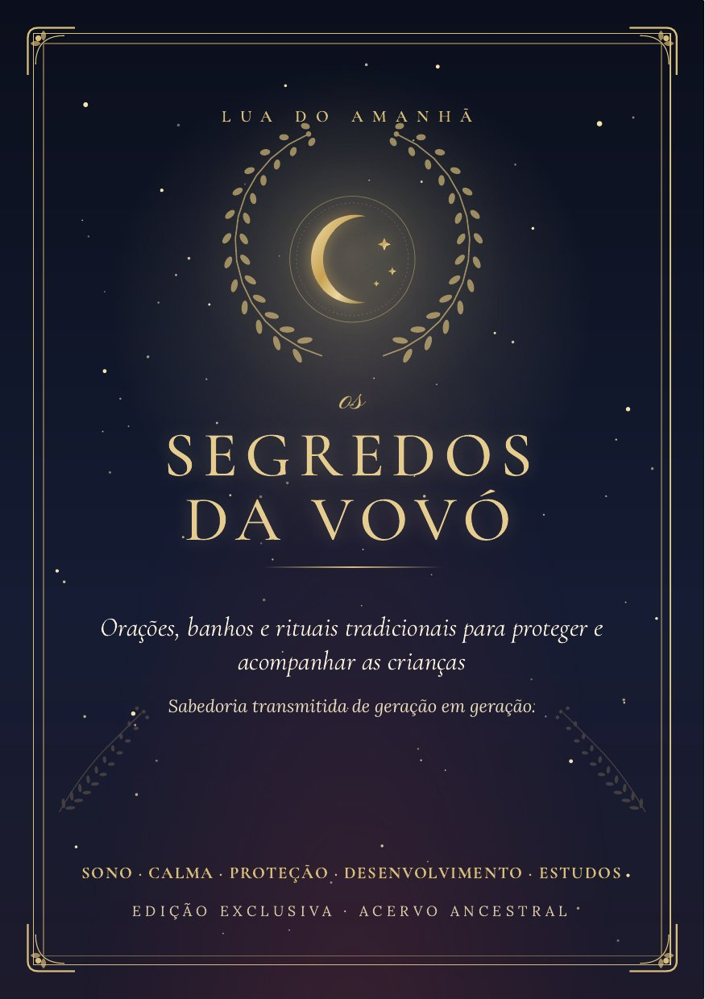
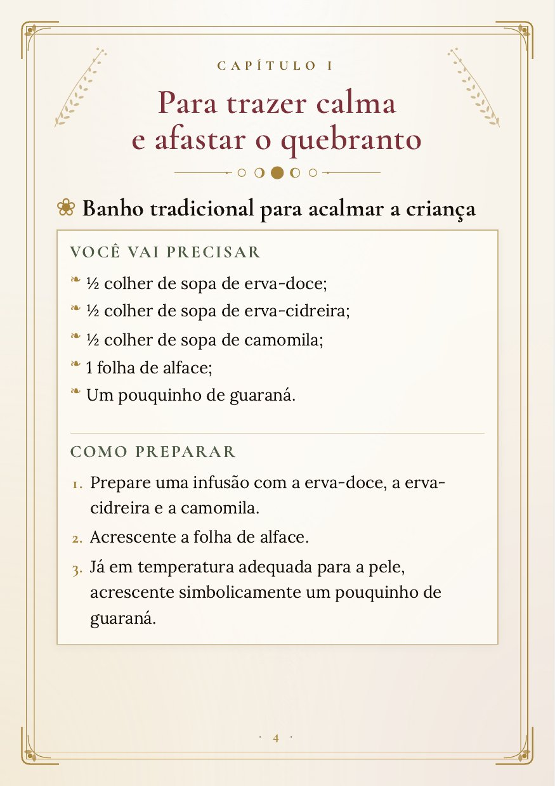
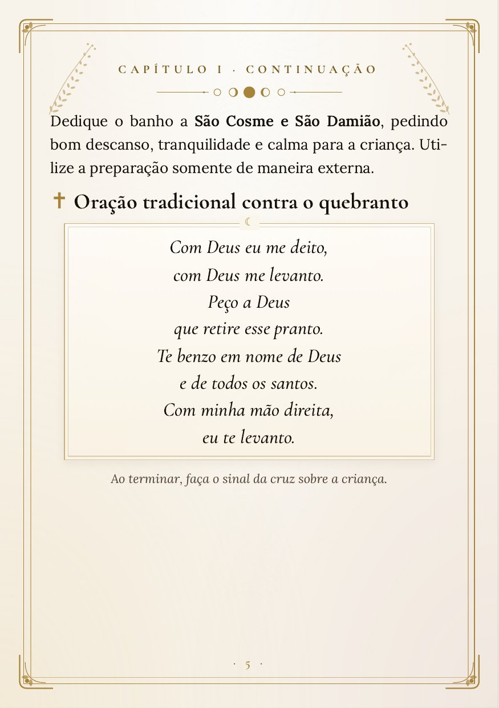
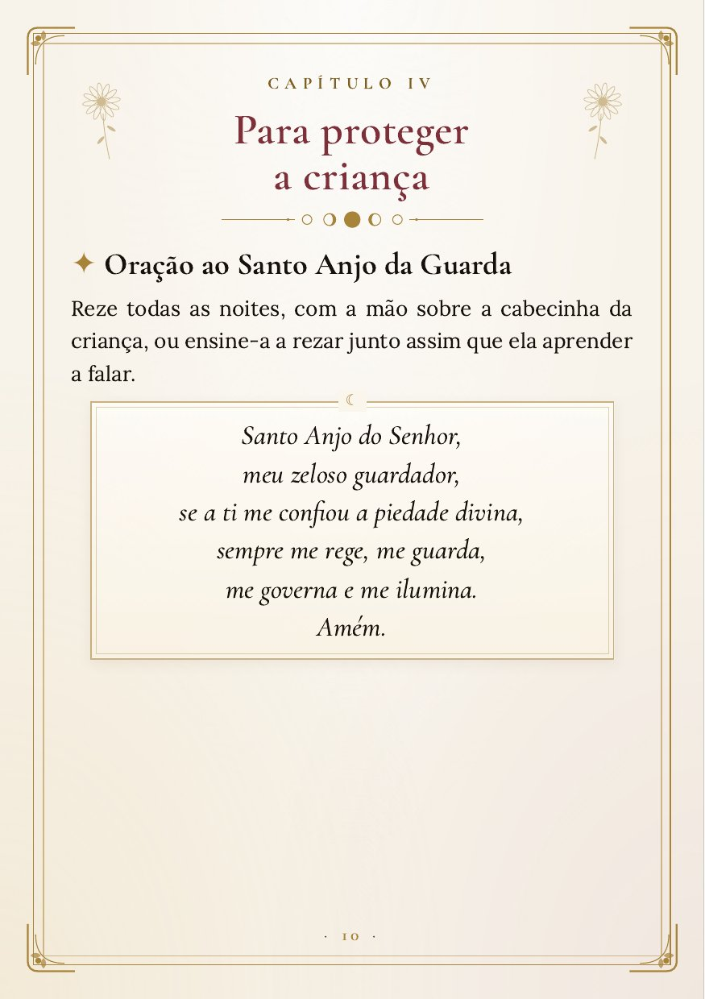

As orações, banhos e rituais que as avós usavam para acalmar, fazer dormir e proteger as crianças, reunidos em um caderno que você começa a usar hoje à noite.

O bebê não dorme. Chora sem motivo aparente. Troca o dia pela noite. Fica irritado depois de uma visita, e você sente que tem alguma coisa “pesando” sobre ele.
Você já balançou, cantou, mudou a rotina, pesquisou na internet de madrugada… e mesmo assim fica aquela sensação de que falta alguma coisa.
Antigamente, a vó sabia o que fazer.
Uma reza baixinho, um banho de erva, um raminho no lugar certo.
O problema é que quase ninguém anotou. E essa sabedoria está se perdendo.
…então você vai entender por que este caderno foi feito para você.
Sono, calma, choro, proteção, primeiros passos ou estudos. Cada capítulo vai direto ao ponto.
Camomila, erva-doce, erva-cidreira, alecrim… coisas que você encontra na feira ou no mercado.
A oração vem escrita, palavra por palavra. É só seguir, do jeito que a vovó fazia.



O banho de São Cosme e São Damião e a oração tradicional contra o quebranto.
O ritual do Anjo da Guarda para o recém-nascido e o segredo para quem troca o dia pela noite.
A folha de saião no vidro e os três galhinhos de erva-cidreira da quarta-feira.
A oração ao Santo Anjo e o vaso de arruda e alecrim na entrada da casa.
Os três passinhos da sexta-feira e o pedido a São Brás pela voz da criança.
O raminho de alecrim no material escolar e a oração a Santo Tomás de Aquino.
Todas as orações do caderno gravadas com voz calma, para rezar junto ou deixar tocando na hora de dormir.
Uma folha para imprimir e colar na geladeira: qual ritual fazer em cada dia da semana e em cada fase da lua.
Se você se viu em pelo menos dois itens,
Os Segredos da Vovó foram escritos para você.
Quantas noites mais você vai passar em claro, sem saber o que fazer?
Você pode continuar pesquisando de madrugada, testando uma coisa aqui e outra ali, se perguntando como a sua avó fazia.
Ou pode ter, ainda hoje, o caderno que reúne o que ela sabia: as palavras certas, as ervas certas, o jeito certo, tudo escrito com carinho para você fazer em casa.
Custa menos que uma pizza no fim de semana. E é uma sabedoria que fica na sua família para sempre.
com carinho, Lua do Amanhã
A Lua do Amanhã nasceu para guardar o que as avós ensinavam e que, aos poucos, estava sendo esquecido. Reunimos orações, banhos e rituais da tradição popular brasileira, contados de boca em boca dentro de casa.
Cada prática foi organizada com cuidado e respeito, com avisos de segurança pensados para bebês e crianças pequenas, para que você possa viver essa tradição com tranquilidade.
Logo após a confirmação do pagamento, você recebe o acesso no seu e-mail. Com Pix ou cartão, a liberação é imediata.
Não. São ervas e itens simples, como camomila, erva-doce, erva-cidreira, alecrim, alface e açúcar, encontrados em feiras, mercados e lojas de produtos naturais.
Os banhos são de uso apenas externo e o caderno traz avisos de segurança em cada ritual, como manter copos, ervas e objetos fora do berço e do alcance da criança.
Não. O caderno preserva práticas espirituais e da tradição popular. Ele caminha junto com o cuidado médico, nunca no lugar dele. Se a criança estiver doente, procure o pediatra.
Sim. Você pode ler no celular, no tablet ou no computador, e também imprimir para guardar.
Você tem 7 dias de garantia. Se não for para você, é só pedir o reembolso e devolvemos 100% do valor.